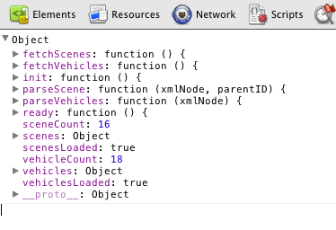

I don't really believe in textual construction syntax in its historical sense. You can't generically "mold" things out as a string in a way that LOAD can resurrect what you had...too much is lost when the binding goes away and whatever parts of the structure that weren't List-like go away. Today's mold and construction syntax is a dead end.
What I do believe in is the idea that while the interpreter is still running, you can ask a complex data structure to give back a reified array description of itself. This description should be concrete where it can be...but if it can't, it needs to give you some kind of POINTER! type that can be further probed.
Think about something that could be used to implement an object browser like in the JavaScript console:

Imagine that first level of result, which gives you things and then you have an arrow to go deeper.
The idea that you actually would get enough information to reconstitute the data structure is interesting, so let's imagine we call this UNMAKE, and we seek it to have that property:
>> obj: {x: 1 + 2, y: first [(a b) (c d)], z: <thing>, f: does [print "hi"]}
>> unset $obj.z
>> unmake obj
== @{x: 3 y: '(a b) z: ~ f: {\0x52d0000a0f48\}}
>> obj2: make unmake obj
>> obj = obj2
== ~true~ ; anti
So here I'm imagining that MAKE would react differently to @{...}, and see that as an instruction to REMAKE what it originally had... or, if you made adjustments, it would be able to affect it.
>> reified: unmake obj
== @{x: 3 y: '(a b) z: ~ f: {\0x52d0000a0f48\}}
>> reified.3: [c d e]
== @{x: 3 y: [c d e] z: ~ f: {\0x52d0000a0f48\}}
>> remake obj reified
>> obj.y
== [c d e]
For this to work, those pointer references have to keep the thing they point to alive somehow. So that would be part of POINTER!'s mechanics.
MOLD would be a client of UNMAKE, where you'd have some depth at which you ask it to go into the pointers, but if it hit a pointer it would just dead end you there with some placeholder:
>> mold obj
== "@{x: 3 y: '(a b) z: ~ f: ~<action!>~}"
>> mold/depth obj 2
== "@{x: 3 y: '(a b) z: ~ f: @{action! [] [print "hi"]}"
And you'd just use that for debug output.
This is only a sketch...but it points in a direction that I think could actually be useful.